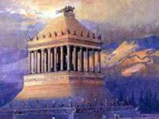
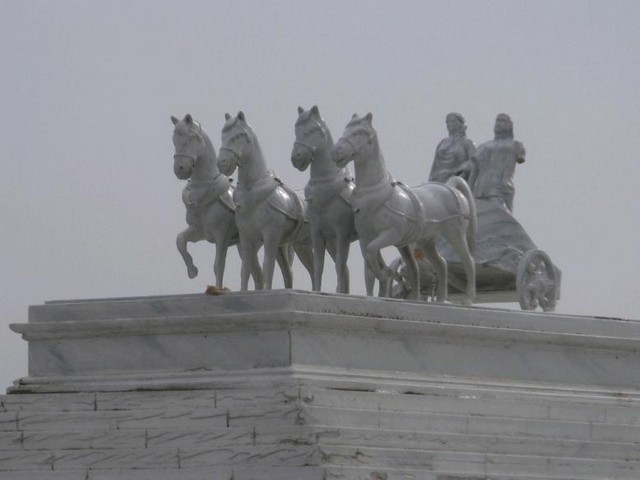
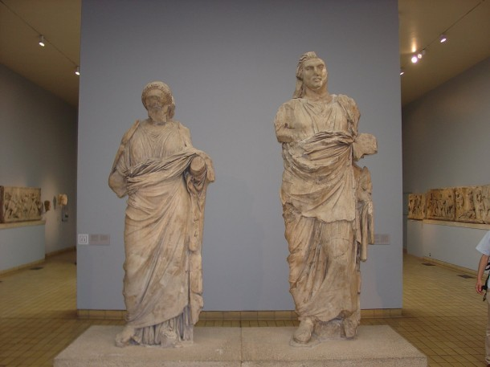
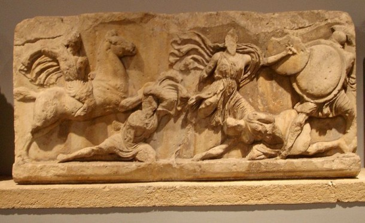

Перенесемося в древнє місто Галікарнас. Він був столицею Карії і, як належить столиці держави, славився своєю красою і величчю. Храми, театри, палаци, сади, фонтани, жива гавань гарантували місту шану і повагу. Але особливу увагу тут займала гробниця царя Мавсола, одне з семи чудес світу в стародавньому світі . Отже, чудо світу мавзолей в Галікарнасі.
Мавзолей в Галікарнасі: історія створення і короткий опис
Цар Мавсол, правлячий Карією в 4 столітті до н.е. (377-353 роки), з досвіду єгипетських фараонів почав будівництво своєї гробниці ще за життя. Вона повинна була стати унікальною спорудою. Розташована в центрі міста, серед палаців і храмів, вона символізує могутність і багатство царя. А для поклоніння покійному цареві, вона повинна поєднувати в собі одночасно і гробницю і храм. На будівництво були виділені кращі архітектори і скульптори - Піфій, Сатир, Леохар, Скопас, Бриаксид, Тимофій. Після смерті царя його дружина, цариця Артемисия, ще інтенсивніше підійшла до будівництва вічного пам'ятника великому чоловікові.

Артеміда
Споруда була закінчена в 350 році до н.е. Її зовнішній вигляд поєднував в собі відразу кілька архітектурних стилів того часу. У мавзолеї виділялося три рівня загальною висотою в 46 метрів. Перший ярус був масивний цоколь із цегли, облицьованого мармуром. Далі на ньому височів храм з 36 колонами. Колони підпирали дах у вигляді піраміди з 24 ступенями. На вершині даху розташовувалася скульптура царя Мавсола і Артемісії в колісниці, запряженій 4 кіньми. Навколо будівлі розташовувалися статуї вершників і левів. Краса будови заворожувала, не випадково, що мавзолей в Галікарнасі швидко увійшов в сім чудес світу стародавнього світу.

Статуя Колісниця з Мавсола і Артемісіею
Сама гробниця Мавсола з дружиною розташовувалася в приміщенні нижнього ярусу. Для поклоніння царю було споруджено верхнє приміщення з колонами і статуєю Мавсола. Статуя збереглася до наших днів, і повноцінно відображає образ царя-деспота. Скульптор в рисах обличчя тонко передав характер Мавсола - злісний, жорстокий, здатний отримувати все, що йому потрібно. Не випадково це був дуже багата людина. Поруч зі статуєю Мавсола знаходилося статуя цариці Артемісії. Її ж скульптор прикрасив, подав у величному, м'якому образі. Працював над нею відомий скульптор того часу Скопас. Обидві ці статуї зараз вважаються одними з кращих в грецькій культурі IV століття до нашої ери. Окремо варто згадати і про верхню частину підстави мавзолею. Скульптори прикрасили його сценами з грецького епосу - битва з амазонками, полювання, битва лапифов з кентаврами.

Статуї Мавсола і Артемиссии
Мавзолей - слово, що походить від імені царя Мавсола, в даний час є загальним серед усіх народів.
Через 18 століть мавзолей був зруйнований землетрусом. Пізніше його руїни використовувалися для побудови замку Святого Петра лицарями-іоаннітів. Коли прийшли турки, замок став фортецею Будрун, в даний час званої Бодрумом. Розкопки тут були проведені в 1857 році. Були знайдені рельєфні плити, статуї Мавсола і Артемісії, статуя колісниці. В даний час вони виставлені в Британському музеї.
